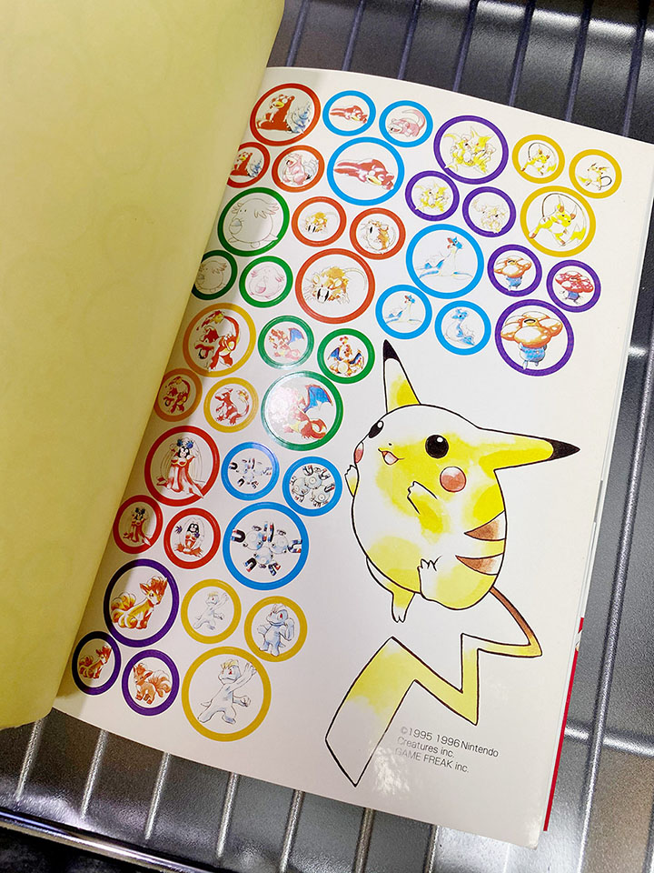

懐かしのポケモン攻略本を買い直してみた
この前、2007年頃を最後に放置していたゲームボーイ・ゲームボーイアドバンスのソフトを引っ張り出して遊んでいた。
コレで色々と懐かしい思い出が蘇ったので、どんどん思い出してみるか～！ということで、当時持っていた攻略本を Amazon で買い直してみた。
目次
- 買い直した攻略本たち
- ポケットモンスターマスターノート
- ポケットモンスター赤・緑・青必勝攻略法
- ポケットモンスタートレーナーズガイドブック
- トランセル種市が教えるスーパー早引き！ポケットモンスターピカチュウ完全ゲット本
- トランセル種市が教えるポケモンスタジアム2勝てる戦略完全攻略本
- 完全制覇ポケモンスタジアム2
- ポケットモンスター金銀ぼうけんマップ
- ポケットモンスター金銀ポケモンずかん
- ポケットモンスター金銀攻略ガイドブック
- ポケットモンスタールビー・サファイアポケモンずかん
- 以上
買い直した攻略本たち
買い直した攻略本たちは以下のとおり。
- ポケットモンスターマスターノート
- ポケットモンスター赤・緑・青必勝攻略法
- ポケットモンスタートレーナーズガイドブック
- トランセル種市が教えるスーパー早引き！ポケットモンスターピカチュウ完全ゲット本
- トランセル種市が教えるポケモンスタジアム2勝てる戦略完全攻略本
- 完全制覇ポケモンスタジアム2
- ポケットモンスター金銀ぼうけんマップ
- ポケットモンスター金銀ポケモンずかん
- ポケットモンスター金銀攻略ガイドブック
- ポケットモンスタールビー・サファイアポケモンずかん
自分が覚えているポケモン関連の攻略本を買い直した。
ポケットモンスターマスターノート
ピカチュウ版を買ってもらった後に、恐らく最初に買ってもらった攻略本かと思う。
「オリエンテーリング」と称して、マップ上に捕まえたポケモンのシールを貼ったり、情報を書き込んでいったりして遊ぶというモノ。データはあえてなのか不十分で、不正確なデータも多い。というか赤・緑・青にしか対応していなくて、ピカチュウ版だとマップすら違っていたりして、若干歯がゆい思いをした記憶がある。

全ポケモンのシールが付属していた。僕はもったいなくてしばらく使えなかったが、段々黄ばんできたので思い切ってカセットの背面に貼り付けたりしていた。今回 Amazon で買い直した本にはこのシールもバッチリ残っていたので、物持ち良いなぁ～と思うなど。
とても懐かしい一冊。
ポケットモンスター赤・緑・青必勝攻略法
コレは自分で持っていたかどうか怪しい。だが、「ポケモンシール」の「ラメ入りピカチュウ」が据えられたこの表紙に見覚えがあり、買ってみた。多分友達の家とかで読んだ記憶があったのかな。
コレもピカチュウ版は非対応。
ポケットモンスタートレーナーズガイドブック
パソコンを触る主人公が表紙に描かれた攻略本。何となく見覚えがあるが、ソフトに付属の取扱説明書の挿絵で見覚えがあったのか、この攻略本をどこかで読んだことがあったのか覚えていない。
ミュウのキャプチャが載っていて、小学生から借りたというクレジットが載っているが、多分コイキングをバグらせたモノ。ｗ
コレもピカチュウ版は非対応。
トランセル種市が教えるスーパー早引き！ポケットモンスターピカチュウ完全ゲット本
ページのレイアウトにかなり見覚えがあり、多分持っていてよく読んでいたと思う。ピカチュウ版にのみフィーチャーした攻略本。
トランセル種市が教えるポケモンスタジアム2勝てる戦略完全攻略本
ポケモンスタジアム2の攻略本。努力値 (という言葉は出てこないが) の解説とか、花本典重のページとかめっちゃ覚えてる。
今見ると、トランセル種市が別にポケモンに詳しくなかったことが分かるコメントが多い。ｗ
完全制覇ポケモンスタジアム2
僕が持っていた攻略本の中でも一番読み込んでいた攻略本。
読み過ぎて「ウルトラカップ」のページのところで本が2つに裂けてたほど。
ポケモンセンター限定カラーのゲームボーイカラーのプレゼント企画が載ってて、当時欲しかったなぁ。
ポケットモンスター金銀ぼうけんマップ
ポケモン金銀の攻略本。コレもまぁまぁ読んでた。
ポケットモンスター金銀ポケモンずかん
「ぼうけんマップ」の続編。図鑑データに特化したモノで、まぁまぁ読み込んでたものの、結局 PAR 使ってたから別に気にしなくても良かった気がする。ｗ
ポケットモンスター金銀攻略ガイドブック
ポケモン金銀の別の攻略本。何で別の攻略本をわざわざ買ってたんだっけかな？
ポケットモンスタールビー・サファイアポケモンずかん
ルビサファの「ぼうけんマップ」も持っていたかもしれない。コレは「ポケモンずかん」の方。
ルビサファはモロに「攻略サイト」を作り込んでいた時期だから、自分でプレイして攻略情報を「書く」方が多くて、あまり攻略本を読み込んではいなかったと思う。
そういや、クリスタルやエメラルドの攻略本は買わなかったなぁ。
以上
いやー懐かしい。トランセル種市シリーズとかポケモンスタジアム2とかはホントに読みまくってた。良い思い出。